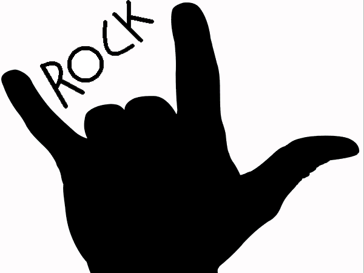
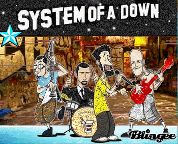
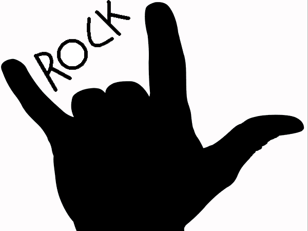
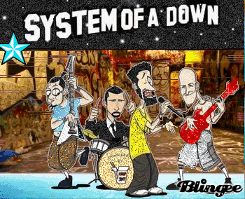

System of a Down
Historia
Inicios (1994-1997) En 1994, tras la ruptura de Soil, Tankian, Odadjian y Malakian formaron una nueva banda, junto a Ontronik Khachaturian, un viejo amigo de Malakian y Odadjian, que había tocado con Malakian en una banda llamada Snowblind durante su adolescencia.8 Luego la banda tendría como nombre «Victims of a Down» por un poema escrito por Malakian. La palabra «Victims» fue cambiada por «System» ya que Odadjian pensó en que la alteración podría atraer a un público mucho más amplio.
Estilo musical y evolución
System of a Down ha sido etiquetado como nu metal por algunos fanáticos y medios en sus comienzos. Esto puede ser atribuido a la publicación de su primer álbum, que ocurrió durante el auge del nu metal, a mediados de los años 90. Añadido a esto, la banda participó del festival Ozzfest, festival conocido por presentar bandas significativas en el género nu metal.
Miembros
System of a Down (también conocida simplemente como System, o por su acrónimo, SOAD) es una banda de rock estadounidense de ascendencia armenia, formada en Glendale, California, en el año 1994. Está compuesta por Serj Tankian (composición, voz, teclado y ocasionalmente guitarra), Daron Malakian (composición, guitarra y voz), Shavo Odadjian (bajo) y John Dolmayan (batería).
Premios y reconocimientos
En 2002 Chop Suey! Mejor Interpretación de Metal 2006 B.Y.O.B. Mejor Interpretación de Hard Rock 2007 Lonely Day Mejor Interpretación de Metal
Discografía
Álbumes de estudio 1998: System of a Down 2001: Toxicity 2002: Steal This Album! 2005: Mezmerize 2005: Hypnotize Demos
 


